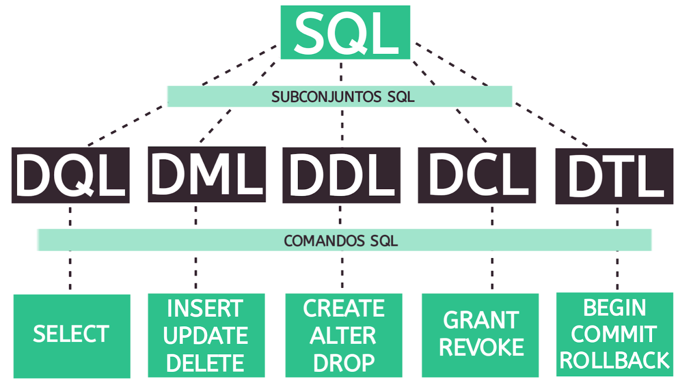

Conceitos
O que é um banco de dados ?
Um banco de dados é uma coleção organizada de informações armazenadas de forma estruturada em um computador. Ele é usado para armazenar, gerenciar e recuperar dados de maneira eficiente.
Um banco de dados consiste em tabelas compostas por linhas e colunas, representando os registros e campos, respectivamente. Sistemas de gerenciamento de banco de dados (SGBDs) são softwares utilizados para criar e manipular bancos de dados, fornecendo recursos avançados de segurança, controle de acesso e integridade dos dados.
Tipos de banco de dados
| Tipo | Descrição |
|---|---|
| Bancos de Dados Relacionais (RDBMS) | Utiliza o modelo relacional, com tabelas, chaves primárias e relacionamentos entre elas. Exemplos populares incluem Oracle, MySQL, Microsoft SQL Server e PostgreSQL. |
| Bancos de Dados Não Relacionais (NoSQL) | Projetados para armazenar e recuperar dados de maneira flexível e escalável, sem um esquema rígido. Incluem bancos de dados de documentos, bancos de dados de chave-valor, bancos de dados de colunas largas e bancos de dados de gráficos. Exemplos populares incluem MongoDB, Cassandra, Redis e Neo4j. |
| Bancos de Dados Orientados a Objetos | Permitem armazenar objetos complexos diretamente, mantendo as relações entre eles. São utilizados principalmente em ambientes de programação orientada a objetos. Exemplos incluem db4o e ObjectDB. |
| Bancos de Dados em Nuvem | São hospedados em infraestruturas de nuvem, permitindo escalabilidade e acesso global aos dados. Podem ser bancos de dados relacionais ou não relacionais, adaptados para ambientes em nuvem. Exemplos incluem Amazon RDS, Microsoft Azure SQL Database e Google Cloud Spanner. |
Banco de dados relacional
Em um banco de dados relacional, as informações são organizadas em tabelas, registros e campos.
| Tabela | Uma tabela é uma estrutura básica de armazenamento de dados em um banco de dados relacional. Ela é composta por linhas e colunas. Cada tabela tem um nome exclusivo e representa uma entidade ou um conjunto de entidades relacionadas. |
| Campo (ou Coluna) | Um campo é uma unidade de dados que representa uma característica específica dentro de um registro. Também é chamado de coluna, pois os campos são organizados verticalmente nas tabelas. Cada campo tem um nome único e um tipo de dado associado (por exemplo, texto, número, data). |
| Registro (ou Linha) | Um registro é uma instância individual de dados armazenada em uma tabela. Também é chamado de linha, pois os registros são organizados horizontalmente nas tabelas. Cada registro contém informações específicas relacionadas a uma entidade. |
SQL (Structured Query Language)
SQL (Structured Query Language) é uma linguagem de programação utilizada para gerenciar e manipular bancos de dados relacionais. Ela permite que você armazene, manipule e recupere dados de forma eficiente.
O SQL fornece um conjunto de comandos para realizar várias operações em bancos de dados, como criar, modificar e excluir tabelas, inserir, atualizar e excluir registros, além de executar consultas complexas para recuperar informações específicas.
Exemplo
-- Criação da tabela cliente
CREATE TABLE cliente (
id_cliente SERIAL PRIMARY KEY,
logradouro VARCHAR(30),
numero_casa INTEGER,
bairro VARCHAR(60),
cidade VARCHAR(60),
celular VARCHAR(12)
);
-- Renomeando a coluna celular e sua quantia de caracteres
ALTER TABLE cliente
RENAME COLUMN celular TO telefone;
ALTER TABLE cliente
ALTER COLUMN telefone TYPE VARCHAR(15);
-- Inserindo um valor a tabela cliente
INSERT INTO cliente (logradouro, numero, bairro, cidade, telefone)
VALUES ('rua francisco', 113, 'jardim lisboa', 'sorocaba', '15998567625');
-- Atualizando um dado já inserido
UPDATE cliente
SET logradouro = 'Rua Osório',
numero = 465,
bairro = 'Vila Odin',
telefone = '159997862598'
WHERE id_cliente = 4;
-- Excluir um linha da tabela
DELETE FROM cliente -- cuidado com DELETE sem WHERE
WHERE id_cliente = 1;
-- Mostrando os valores da tabela cliente
SELECT * FROM cliente
-- Mostrando linha especifica da tabela
SELECT *
FROM cliente
WHERE id_cliente = 1;
-- Excluindo a tabela cliente
DROP TABLE cliente
Além disso, o SQL permite realizar operações de filtragem, classificação e junção de dados. Você pode usar cláusulas como "WHERE" para filtrar registros com base em condições específicas, "ORDER BY" para classificar os resultados e "JOIN" para combinar dados de várias tabelas.
Exemplo
-- INNER JOIN
SELECT *
FROM cliente
INNER JOIN livros
ON cliente.id_livro = livros.id_livro;
-- LEFT JOIN
SELECT *
FROM cliente
LEFT JOIN livros
ON cliente.livros_comprados = livros.id_livro;
-- RIGHT JOIN
SELECT *
FROM cliente
RIGHT JOIN livros
ON cliente.livros_comprados = livros.id_livro;
O SQL é amplamente utilizado em diferentes sistemas de gerenciamento de banco de dados (SGBDs), como o MySQL, PostgreSQL, Oracle, SQL Server e muitos outros. Embora haja algumas diferenças entre os dialetos SQL de cada SGBD, a maioria dos comandos básicos é comum a todos eles.
Modelagem de dados
Modelagem conceitual
A modelagem conceitual é uma etapa do processo de projeto de banco de dados em que se cria um modelo abstrato e de alto nível das principais entidades e relacionamentos envolvidos no sistema. O objetivo da modelagem conceitual é capturar os requisitos e as regras de negócio de forma clara e compreensível, sem se aprofundar em detalhes técnicos de implementação.
A modelagem conceitual foca principalmente em identificar as entidades principais do sistema, seus atributos (características) e os relacionamentos entre elas. Ela ajuda a definir a estrutura e a semântica dos dados, fornecendo uma visão geral e intuitiva do sistema antes de se aprofundar nos detalhes de implementação.
exemplo
Livro:
-ID (chave primária)
-Título
-Autor
-Ano de publicação
-ISBN
-Editora
-Gênero
-Quantidade disponível
Autor:
-ID (chave primária)
-Nome
-País de origem
Editora:
-ID (chave primária)
-Nome
-Localização
Relacionamentos:
O relacionamento "Escrito por" conecta a entidade Livro à entidade Autor. Um livro pode ser escrito por um ou mais autores, enquanto um autor pode ter escrito um ou mais livros.
O relacionamento "Publicado por" conecta a entidade Livro à entidade Editora. Uma editora pode ter publicado um ou mais livros, mas um livro é publicado por apenas uma editora.
Atributos adicionais:
A entidade Livro pode ter atributos adicionais, como descrição, idioma, número de páginas, entre outros.
As entidades Autor e Editora também podem ter atributos adicionais, como data de nascimento, biografia, entre outros.